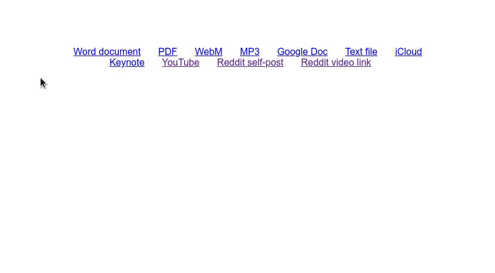

Peek is a browser extension of mine that shows previews for links when you hover over them. It has been over a year since the last update, so I’m excited to finally roll out Peek 4.0!
The first key improvement in Peek 4.0 is returning support for non-document links. I’ve had a few people ask me if Peek could support more types of links than just document files (PDFs, Word files, etc.), and v4.0 is the first step in that direction. YouTube and Reddit links can now be previewed, and I plan to add support for more popular sites in the future. OpenDocument files (like those used by LibreOffice) are also now supported.

Second, Peek has a redesigned settings page with a new option: customizable sizing! You can now change the size of Peek’s preview popup to any value you want. This is something that was first requested almost a year ago.
Third, Peek finally has a good icon! The old logo has been replaced with a stylish purple one, designed by Mason Conrad.
Peek 4.0 also includes more code rewrites to fix various bugs and improve code readability. It’s rolling out now to Firefox and Chrome.